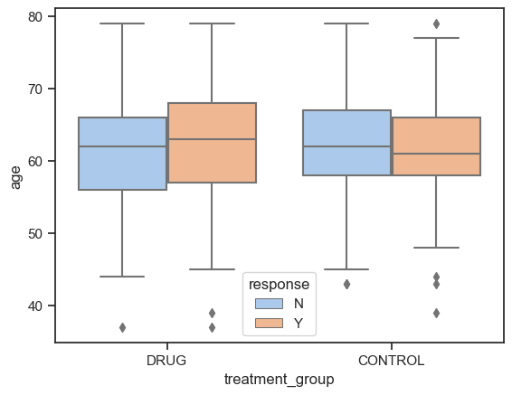
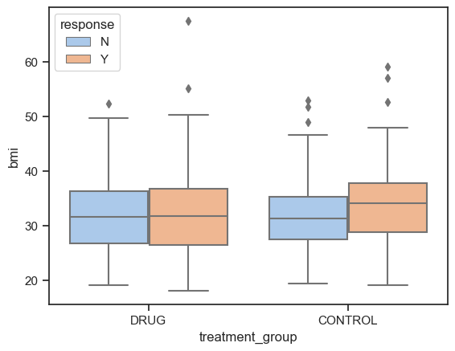
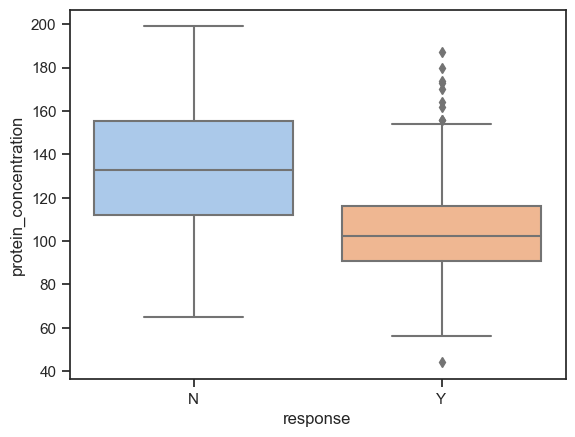
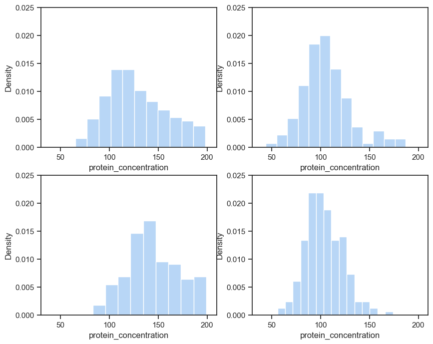
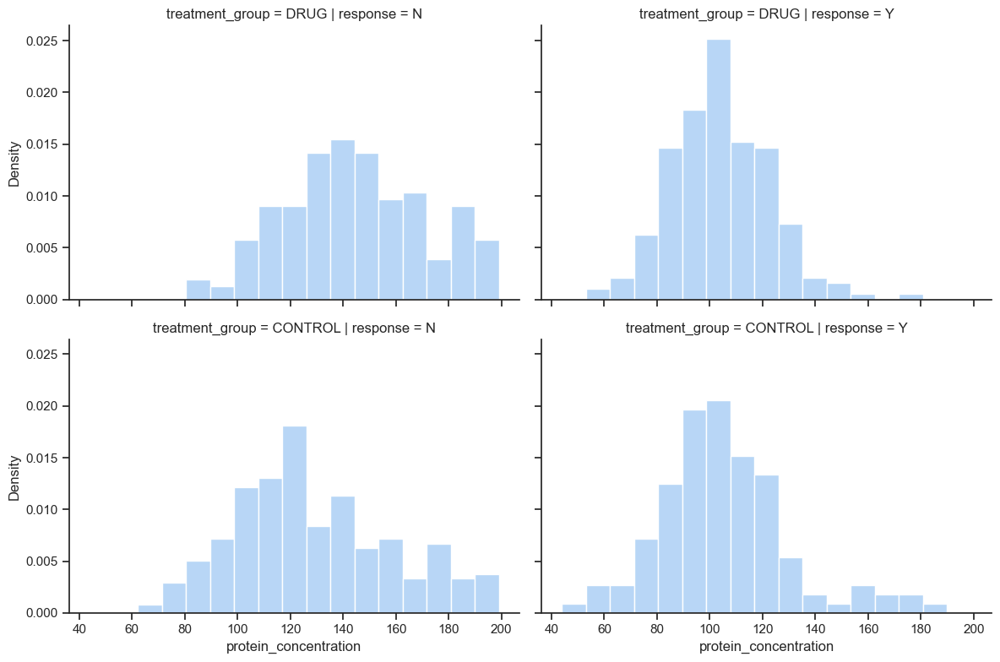

import pandas as pd
from scipy.stats import chi2_contingency, ttest_ind
from scipy.stats.contingency import relative_risk, odds_ratio
import seaborn as sns
import matplotlib.pyplot as pltFirst, let’s do some set up.
sns.set_theme(style="ticks", palette="pastel")pd.read_csv?Time to read in data.
df_study = pd.read_csv("./resources/clinical-study.csv")
df_protein = pd.read_csv("./resources/protein-levels.csv")Join the two tables.
df = pd.merge(df_study, df_protein, "left", left_on = "subject_id", right_on = "participant_id")And inspect the resulting data frame briefly.
df.describe()
df.info()<class 'pandas.core.frame.DataFrame'>
Int64Index: 772 entries, 0 to 771
Data columns (total 9 columns):
# Column Non-Null Count Dtype
--- ------ -------------- -----
0 subject_id 772 non-null object
1 age 772 non-null float64
2 sex 772 non-null object
3 weight 761 non-null float64
4 height 772 non-null float64
5 trt_grp 772 non-null object
6 RESPONSE 772 non-null object
7 participant_id 769 non-null object
8 protein_concentration 764 non-null float64
dtypes: float64(4), object(5)
memory usage: 60.3+ KBNow, add a BMI column.
df["bmi"] = round(df["weight"] / (df["height"] ** 2), 1)Do some clean-up by renaming columns and moving bmi after weight
df.columnsIndex(['subject_id', 'age', 'sex', 'weight', 'height', 'trt_grp', 'RESPONSE',
'participant_id', 'protein_concentration', 'bmi'],
dtype='object')df = df[['subject_id', 'age', 'sex', 'weight', 'bmi', 'height', 'trt_grp',
'RESPONSE', 'protein_concentration']]
df = df.rename(columns = {"trt_grp": "treatment_group",
"RESPONSE": "response",
"subject_id": "participant_id"})Now let’s remove pediatric patients and duplicates
df = df[df.age >= 21]
df[df.age < 21]| participant_id | age | sex | weight | bmi | height | treatment_group | response | protein_concentration |
|---|
df.drop_duplicates(inplace = True)Let’s check if there are any missing values.
df.isna().any()participant_id False
age False
sex False
weight True
bmi True
height False
treatment_group False
response False
protein_concentration True
dtype: boolSo there are missing values in weight, BMI and protein concentration.
Counts of missing values follow.
len(df) - df.count()participant_id 0
age 0
sex 0
weight 11
bmi 11
height 0
treatment_group 0
response 0
protein_concentration 5
dtype: int64There are 11 missing values in weight (and hence BMI) and 5 missing values in protein concentration. Compared to 768 observations, that is not many. We will just let pandas ignore them.
Now, let’s inspect if the data is valid.
df.sex.unique()
df.sex.value_counts()Female 389
Male 379
Name: sex, dtype: int64df.treatment_group.value_counts()CONTROL 385
DRUG 383
Name: treatment_group, dtype: int64df.weight.min()46.17The data is now clean and ready for analysis. Let’s look at its final form.
df.head()| participant_id | age | sex | weight | bmi | height | treatment_group | response | protein_concentration | |
|---|---|---|---|---|---|---|---|---|---|
| 0 | SUBJ_001 | 46.0 | Female | 84.66 | 33.5 | 1.59 | DRUG | N | 148.0 |
| 2 | SUBJ_002 | 47.0 | Female | 71.21 | 26.5 | 1.64 | DRUG | Y | 85.0 |
| 3 | SUBJ_003 | 48.0 | Female | 69.85 | 23.3 | 1.73 | CONTROL | N | 183.0 |
| 4 | SUBJ_004 | 59.0 | Female | 62.94 | 28.0 | 1.50 | DRUG | Y | 89.0 |
| 5 | SUBJ_005 | 59.0 | Female | 113.91 | 42.9 | 1.63 | CONTROL | N | 137.0 |
Let’s check if treatment groups are balanced.
df[df.treatment_group == "DRUG"].participant_id.count()383df[df.treatment_group == "CONTROL"].participant_id.count()385df[df.treatment_group == "DRUG"].sex.value_counts()Male 196
Female 187
Name: sex, dtype: int64df[df.treatment_group == "CONTROL"].sex.value_counts()Female 202
Male 183
Name: sex, dtype: int64df[df.treatment_group == "DRUG"].age.mean()61.759791122715406df[df.treatment_group == "CONTROL"].age.mean()61.862337662337666df[df.treatment_group == "DRUG"].bmi.mean()31.986807387862797df[df.treatment_group == "CONTROL"].bmi.mean()32.66719576719577df[df.treatment_group == "DRUG"].height.mean()1.6827415143603133df[df.treatment_group == "CONTROL"].height.mean()1.6758181818181819df[df.treatment_group == "DRUG"].protein_concentration.mean()122.08179419525067df[df.treatment_group == "CONTROL"].protein_concentration.mean()121.296875Or we can do the same but better by using groupby
df.groupby("treatment_group").sex.value_counts()treatment_group sex
CONTROL Female 202
Male 183
DRUG Male 196
Female 187
Name: sex, dtype: int64df.groupby("treatment_group").mean(numeric_only = True).round(2)| age | weight | bmi | height | protein_concentration | |
|---|---|---|---|---|---|
| treatment_group | |||||
| CONTROL | 61.86 | 91.94 | 32.67 | 1.68 | 121.30 |
| DRUG | 61.76 | 90.84 | 31.99 | 1.68 | 122.08 |
The treatment groups look to be well balanced.
Now let’s look at the responses to answer the question: is the drug effective?
contingency = pd.crosstab(index = df['treatment_group'], columns =
df['response']).reindex(index =["DRUG", "CONTROL"], columns= ["Y", "N"])
contingency| response | Y | N |
|---|---|---|
| treatment_group | ||
| DRUG | 210 | 173 |
| CONTROL | 124 | 261 |
print(f"In the drug group, a proportion of {round(210/(173+210),3)} participants had a response.")
print(f"In the control group, a proportion of {round(124/(124+261),3)} participants had a response.")In the drug group, a proportion of 0.548 participants had a response.
In the control group, a proportion of 0.322 participants had a response.chi2_contingency(contingency).pvalue4.0953175442471774e-10The p-value in the chi-squared test for no association is very small, therefore there is very strong evidence against the null hypothesis. There is very strong evidence of a positive association between taking the drug and having a response. The drug is effective. But how effective?
result = relative_risk(210, 210+173, 124, 123 + 261)
round(result.relative_risk, 2)1.7result.confidence_interval(0.95)ConfidenceInterval(low=1.4310965729442944, high=2.0146108947467827)result_odds = odds_ratio(contingency, kind="sample")
round(result_odds.statistic, 1)2.6result_odds.confidence_interval(0.95)ConfidenceInterval(low=1.9049662776388707, high=3.4268629453145794)RR = 1.7 with 95% CI (1.4, 2.0); OR = 2.6 with 95% CI (1.9, 3.4).
Therefore, the patients saw a substantial benefit.
The question to answer now is which subgroups of patients are benefiting more from the treatment?
grouped_by_r = df.groupby("response")
grouped_by_r[["age", "weight", "bmi", "height", "protein_concentration"]].mean().round(2)| age | weight | bmi | height | protein_concentration | |
|---|---|---|---|---|---|
| response | |||||
| N | 61.75 | 89.92 | 31.86 | 1.68 | 134.98 |
| Y | 61.89 | 93.26 | 32.93 | 1.68 | 104.43 |
grouped_by_t_r = df.groupby(["treatment_group", "response"])
grouped_by_t_r[["age", "weight", "bmi", "height", "protein_concentration"]].mean().round(2)| age | weight | bmi | height | protein_concentration | ||
|---|---|---|---|---|---|---|
| treatment_group | response | |||||
| CONTROL | N | 62.04 | 89.76 | 31.88 | 1.68 | 128.80 |
| Y | 61.48 | 96.40 | 34.28 | 1.67 | 105.38 | |
| DRUG | N | 61.31 | 90.16 | 31.83 | 1.68 | 144.46 |
| Y | 62.13 | 91.39 | 32.12 | 1.69 | 103.88 |
grouped_by_r.groups
grouped_by_t_r.groups
df_test = grouped_by_t_r.get_group(('CONTROL', 'N'))Mean ages across groups look similar. Let’s produce a boxplot of ages.
sns.boxplot(x = "treatment_group", y = "age", hue = "response", data = df)<Axes: xlabel='treatment_group', ylabel='age'>
Distributions of ages are similar across groups.
Mean BMI is slightly higher for responders. Let’s investigate with a boxplot.
sns.boxplot(x = "treatment_group", y = "bmi", data = df, hue = "response")<Axes: xlabel='treatment_group', ylabel='bmi'>
Distrubution of BMI is similar across groups, except there are more extreme high values among responders. In the drug group, the distributions are nearly identical.
We can perform a t-test for the difference between means too
ttest_ind(grouped_by_t_r.get_group(('DRUG', 'Y')).bmi.to_list(), grouped_by_t_r.get_group(('DRUG', 'N')).bmi.to_list(),
nan_policy = 'omit')Ttest_indResult(statistic=0.3961791857001643, pvalue=0.6921969755786451)ttest_ind(grouped_by_r.get_group('Y').bmi, grouped_by_r.get_group('N').bmi,
nan_policy = 'omit')Ttest_indResult(statistic=2.1139269000207617, pvalue=0.03484884491794387)There is no difference in the distributions of BMIs for responders and non-responders in the drug group. There is moderate evidence of a difference in mean BMI between all responders and all non-reponders, but considering there are more high potential outliers among responders, this doesn’t not appear to be important.
The mean protein concentration is lower for responders (mean 104) than for non-responder (mean 135). Let’s produce a boxplot.
sns.boxplot(x = "response", y = "protein_concentration", data = df)<Axes: xlabel='response', ylabel='protein_concentration'>
And a histogram of the distributions of protein concentration among the different groups.
fig, ax = plt.subplots(nrows = 2, ncols = 2, figsize = (10,8))
plt.setp(ax, xlim = (30, 210), ylim=(0, 0.025))
sns.histplot(x = "protein_concentration", data = grouped_by_t_r.get_group(('DRUG', 'N')), stat = "density", ax = ax[1, 0])
sns.histplot(x = "protein_concentration", data = grouped_by_t_r.get_group(('DRUG', 'Y')), stat = "density", ax = ax[1, 1])
sns.histplot(x = "protein_concentration", data = grouped_by_t_r.get_group(('CONTROL', 'N')), stat = "density", ax = ax[0, 0])
sns.histplot(x = "protein_concentration", data = grouped_by_t_r.get_group(('CONTROL', 'Y')), stat = "density", ax = ax[0, 1])
plt.show()
Or, better.
sns.displot(df, x = "protein_concentration", row = "treatment_group", col = "response", stat = "density",
height = 4, aspect = 1.5, common_norm = False)
Responders tend to have a protein concentration below 140. For non-reponders, the high end of possible range of values is much higher.
We can perform a two-sample t-test.
ttest_ind(grouped_by_r.get_group('Y').protein_concentration, grouped_by_r.get_group('N').protein_concentration,
nan_policy = 'omit')Ttest_indResult(statistic=-15.766937692608886, pvalue=1.1280938358273306e-48)There is very strong evidence that the mean protein concentration is lower for responders compared to non-responders.